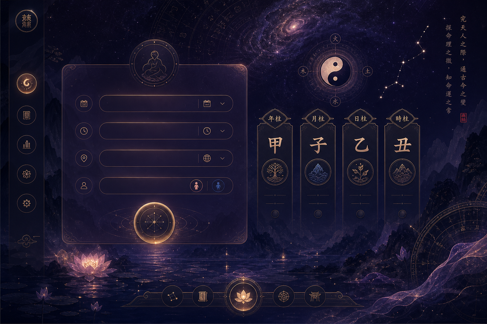

Introduction
Fortune-telling is a narrative industry. Youth meet BaZi and astrology on WeChat and Xiaohongshu. Workplace bias tools do not address ke-fu or marriage-centrism. AI fortune apps optimize insight, not critique. We built a bilingual journey on pages.dev/game and vercel.app/game.
Literature review
- Performative gender (Butler, 1990)
- Discourse & power (Foucault, 1972)
- Situated knowledges (Haraway, 1988)
- LLM narrative authority (Bender et al., 2021; Cotter, 2022)

Method
Within-subjects pre/post · convenience sample · data closed 2026-07-19. Consent → pre-survey → six steps: choose BaZi or astrology → local chart → traditional read first → bias scanner → Court of Destiny (one sentence) → three-column compare (traditional / modern / AI reframe) → post-survey. Five follow-up semi-structured interviews (WeChat). Anonymous Supabase logs; no birth PII stored.

Result
Paired N = 19 (four journey completers missed post-survey). Mean change (ΔM): bias awareness +0.31; reframe confidence +0.47; gender lens +0.31; personal agency −0.11; spot stereotypes 0.00. Journeys: astrology 13, BaZi 10. Top bias tags: ke-fu, virtuous-wife, chastity, moral judgment. Interviews: three-column compare most cited; 4/5 reported awareness shift; onboarding tutorial requested.
Implications
Embed reframing inside divination media. Require user-authored Court text before AI reframe. Add step tutorial. Teach gender lens without replacing one oracle with another.
Limitation
- Convenience sample
- Self-report Likert
- Single session
- Descriptive stats only